Tutorials
When I was a student (both undergrad/grad), I wrote a lot of educational web tutorials on a diverse array of topics as a hobby. Some of these articles began in classes I took when I was an undergraduate at Princeton University, and some of them were written for fun on my own time. Many of them remain popular to this day, so I am archiving them here. All math is displayed in LaTeX using the jsMath plugin. Code is displayed using Alex Gorbatchev's SyntaxHighlighter. And comments are served by DISQUS.
Computer Graphics / Vision
Basic Image Processing TechniquesLast Updated 2/18/2009 |
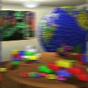 | This was the first assignment I did for my computer graphics class when I was a sophomore in college. The explanations are a little bit sparse but there are lots of pretty pictures. |
Edge, Corner, and Blob DetectionLast Updated 10/6/2009 |
This tutorial explains the math behind Canny Edge detection, corner detection, and basic blob detection: three extremely important algorithms at the heart of computer vision. | |
Seam CarvingLast Updated 9/18/2011 |
This tutorial explains a relatively simple technique for "content-aware image resizing." The algorithm attempts to find "less important" regions of an image and delete them first, so that an image doesn't get uniformly blurred before getting resized. As such, it does a much better job preserving important details after resizing. This technique can also be used to remove unwanted objects from an image. | |
Image AnalogiesLast Updated 10/12/2010 |
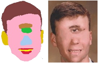 | I explain an amazing technique that came out of the NYU graphics group that does the following: Given two images A and A' with some relationship between them, start with an image B and synthesize an image B' from scratch that has the same relationship. For instance, if A' is a blurred version of A, B' should be a blurred version of B. There possibilities are endless. (This was the first assignment for a graduate computer graphics class I took as a Princeton senior) |
Poisson Image EditingLast Updated 3/25/2012 |
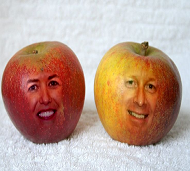 | This is a tutorial I wrote about a technique to seamlessly blend images together fully automatically. The heart of the algorithm rests on a very simple idea that I've attempted to explain as clearly as I can for an audience that may be a bit rusty on math. Best of all, I made an interactive Java applet that lets people try the technique out. My hope is that this program will allow just about anyone to do wacky things with images on their own desktop, even if they aren't interested in understanding exactly how it works. Try It Out Yourself! SOURCE CODE (Java) |
Automatic Background/Foreground Segmentation in VideosLast Updated 1/11/2011 |
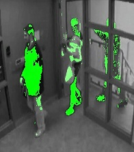 | This tutorial presents two different algorithms to automatically segment foreground and background objects in video. One technique uses a mixture of Gaussians, while the other technique uses information in the frequency domain. (This was my final project for a senior year image processing class at Princeton) SOURCE CODE (Visual C++ 2008) |
3D Shape MatchingLast Updated 11/21/2010 |
 | Given a 3D shape, this tutorial explains how to find the "most similar" shape in a database of pre-defined shapes. It uses machine learning techniques based off of "shape descriptors," which try to capture some of the geometry of a shape in a vector. It also introduces "precision-recall" graphs, a useful and more general technique for analyzing how well machine learning algorithms work. This tutorial is closely related to my senior thesis at Princeton, which was to analyze a novel 3D shape descriptor for point clouds in cities. |
Laplacian Mesh EditingLast Updated 10/30/2010 |
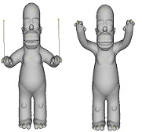 | This tutorial talks about how to move one vertex on a 3D mesh away from its original position and to have the mesh bend and stretch gracefully to accomadate this change. (This was the second assignment for a graduate computer graphics class I took as a Princeton senior) |
Mesh Segmentation Using KMeans ClusteringLast Updated 11/29/2010 |
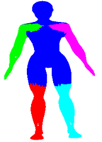 | I present a simple technique used to automatically divide 3D surfaces up into smaller parts that have semantic meaning. (This was the third assignment for a graduate computer graphics class I took as a Princeton senior) |
Digital Signal Processing / Acoustics
Composing with Risset BeatsLast Updated 3/10/2009 |
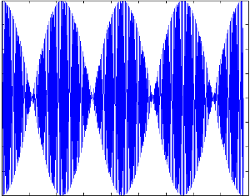 | This is a fun little project that explains how it's possible to make music with "beats," or the sounds that result when two notes are really close to each other in frequency. Source code included. Click here for Michael Jackson's "Wanna Be Startin Somethin" synthesized with my Risset Beats program. |
Geometry
The Regular TetrahedronLast Updated 6/22/2011 |  | A very small tutorial I wrote using vector geometry to show that the angles between molecules arranged on the regular tetrahedron are approximately 109.5 degrees |
Kinect Disparity to Depth ConversionLast Updated 1/29/2014 |  | An excerpt from a paper I never published that explains the geometry behind converting from a raw "disparity map" (the unprocessed stereo correspondences sent back from the Kinect) to 3D depth coordinates, assuming a distortionless pinhole camera model. |
Calculus
Taylor SeriesLast Updated 9/19/2010 | 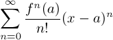 | A light introduction to Taylor Series. I derive it from a differential and integral point of view, I show how to estimate the remainder term, and I give lots of examples, including how to approximate the square root of two and why small angle approximation works. Hopefully an intuitive and clear explanation of Taylor Series for people who are confused about it or who have never seen it before |
Euler's FormulaLast Updated 5/19/2010 | A short tutorial on Euler's Formula, which ties exponentials to sinusoids through imaginary numbers. A very important prerequisite to signal processing | |
Implicit Multivariable DifferentiationLast Updated 3/25/2012 | 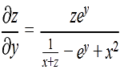 | Implicit differentiation of multivariabled functions. This topic came up while I was tutoring a few times in college, and I found it tricky enough to warrant a small tutorial. Just a few quick examples and some key ideas to get through these types of problems |
Robotics
SLAM and Global Navigation on the iRobot Roomba using ROSLast Updated 6/21/2011 | 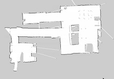 | This is a tutorial I wrote primarily for my adviser Matt Reynolds to explain a subset of my work from the summer to him. |
Algorithms
Geometric Set CoverLast Updated 5/2/2014 | 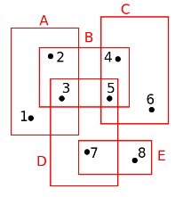 | All of the students in my geometric algorithms class at Duke had to transcribe one of the lectures. My job was to summarize set cover, hitting set, and independent set in a geometric context. It turns out that we can exploit some results from epsilon nets in a geometric context to come up with better approximation algorithms for these NP-hard problems. |
Recursion and Self-SimilarityLast Updated 8/20/2006 | 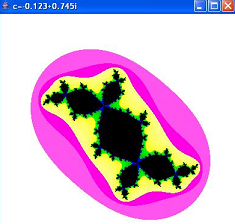 | This is a tutorial I wrote on recursion back in high school for the Upper Dublin High School computer club (which I ran at the time). I talk about recursive functions, the Fibonacci sequence, the Towers of Hanoi, and fractals. |